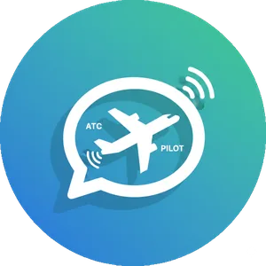
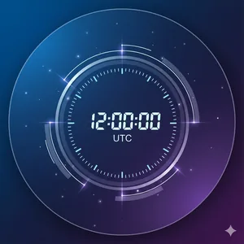
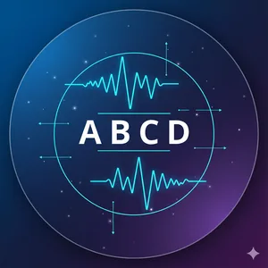

Phraséologie

Entraînez-vous aux communications radio VFR et IFR, en français et en anglais : trois niveaux, quiz noté, vol complet guidé, ATC qui vous parle et réponse à la voix. Textes conformes au manuel DGAC.
En savoir plusMontre UTC

Une horloge à l'heure UTC à intégrer dans votre site Internet. Elle utilise les capteurs de mouvements et de lumière pour vous offrir une expérience amusante.
Visiter l'applicationSELCAL

Le système Selcal est un système d'appel sélectif permettant à un opérateur au sol d'avertir un équipage d'un aéronef qu'il souhaite entrer en communication avec l'appareil. Chaque appareil se voit attribuer un code en 4 lettres qui forme un code à deux bi-tonalités audio.
Visiter l'applicationAtelier réglages

Comprenez ce qui limite vos images par seconde dans Microsoft Flight Simulator 2020 et 2024 : diagnostic du goulot, cible adaptée à votre écran, réglages sourcés, mode challenge et journal de tests. Tout reste dans votre navigateur.
Ouvrir l'atelierForum AvroBB

Le forum des projets du site : questions, retours et discussions autour de la phraséologie, de la simulation de vol et des outils d'aeronautique.xyz. Lecture libre, inscription pour écrire, en français et en anglais.
Aller sur le forumAppel à projets

Une idée d'outil pour les pilotes, réels ou virtuels ? Une règle ou une source à ajouter à un outil existant ? Proposez-la sur le forum : les outils du site sont libres et ouverts aux contributions.
Proposer un projet